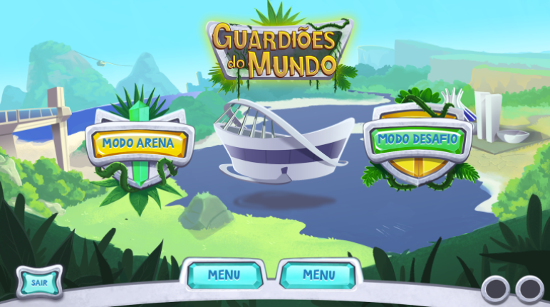
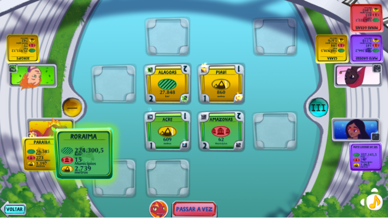

Guardiões do Mundo
Guardiões do Mundo é um jogo de cartas digital para jogadores a partir de 9 anos, na PlayTable, a mesa interativa da Playmove. Personagens do folclore brasileiro disputam o controle de um tabuleiro jogando cartas de estados brasileiros em casas que representam atributos como extensão territorial, quantidade de municípios e altitude máxima. Projetei o modo desafio: 20 partidas rápidas contra a IA, cada vez mais difíceis.
Visão geral
- Estúdio
- Playmove
- Plataforma
- PlayTable (mesa interativa para até 4 jogadores)
- Gênero
- Jogo de cartas digital educativo
- Time
- Time de 3 pessoas: 1 game designer, 1 artista e 1 programador
- Ferramentas
- Unity, prototipação em papel, Google Sheets, Google Docs
- Período
- 2015
Meu trabalho no Guardiões do Mundo foi focado no modo desafio. O jogo continua disponível até hoje.
Guardiões do Mundo é um jogo de cartas sobre os estados brasileiros. Quatro personagens do folclore brasileiro (Saci, Iara, Curupira e Boitatá) disputam o controle de um tabuleiro jogando cartas de estados. Uma partida funciona assim:
- O tabuleiroCada casa vale pontos e representa um atributo: extensão territorial, quantidade de municípios ou altitude máxima. Mais casas são reveladas a cada rodada.
- Jogar uma cartaNa sua vez, o jogador coloca uma de suas cartas de estado em uma casa, e o que vale é o valor do estado naquele atributo.
- BatalhasEm vez de tomar uma casa livre, o próximo jogador pode jogar uma carta sobre a de um adversário. As duas cartas são comparadas no atributo daquela casa: quem vence fica com a casa e a perdedora é eliminada.
- O decisorUm decisor define quem vence a batalha: o maior valor ou o menor. Por exemplo, São Paulo é jogado sobre Roraima em uma casa de municípios. Se vence o maior, São Paulo ocupa a casa e Roraima é eliminada. Se vence o menor, Roraima permanece e São Paulo é eliminado.
- VitóriaAo final de cada rodada, os pontos das casas que cada jogador domina são contados. Depois de três rodadas, vence quem tiver pontuado mais.
Telas





Minhas contribuições
- Conceito do modo desafioProjetei o modo desafio como um formato curto construído sobre as regras do jogo principal: uma partida rápida contra a IA em que o jogador tem apenas três cartas na mão e precisa vencer com elas.
- Level designProjetei os 20 desafios em ordem progressiva de dificuldade, de modo que cada um exija do jogador um pouco mais que o anterior.
- Curva de dificuldadeMoldei a dificuldade de cada desafio por meio das cartas que o jogador tem e da forma como a IA responde, mantendo a progressão constante do primeiro ao último desafio.
- Comportamento da IADefini como a IA decide o que jogar: uma combinação de regras que lê as ações já feitas no tabuleiro e escolhe, a partir delas, a carta e a casa.
- Antecipar o jogadorAjustei as decisões da IA de acordo com a forma como o jogador poderia reagir em cada desafio, para que o adversário parecesse coerente e a dificuldade justa.
Desafios e soluções
Vinte desafios progressivamente mais difíceis
A decisão de design mais difícil do modo foi construir 20 desafios com uma curva de dificuldade constante. Com apenas três cartas na mão, cada partida virava um problema curto a resolver, então a dificuldade podia ser moldada pelas cartas que o jogador tem e pela resposta da IA, e não pela duração da partida.
Uma IA que reage ao tabuleiro
Para que cada desafio parecesse um adversário de verdade, a IA não podia seguir um roteiro fixo. Suas escolhas dependem do que foi jogado no tabuleiro, por meio de uma combinação de regras que decide qual carta usar e onde. As regras foram ajustadas à forma como o jogador poderia reagir, para que cada desafio exigisse uma decisão diferente.
Transformar uma partida completa em uma partida rápida
O jogo principal é uma partida de vários turnos, e o modo desafio precisava de uma versão mais curta, com objetivo próprio. Limitar a mão a três cartas condensou as decisões de uma partida inteira em poucas jogadas, mantendo as regras que o jogador já conhece.
Resultados
O jogo teve uma ótima aceitação nas escolas, por tratar de um assunto da grade curricular que a plataforma ainda não cobria e também pela versatilidade dos seus modos de jogo. Ele continua disponível na PlayTable até hoje.
Neste modo, cada desafio foi projetado para ser mais difícil que o anterior e para ser respondido por um adversário que lê o tabuleiro.